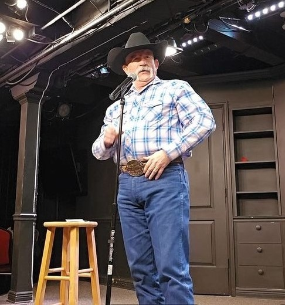
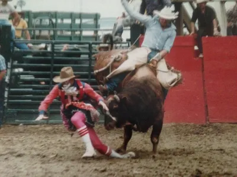

I'm Freddie Waltz.
I've spent a lifetime around people, stories, and laughter.
Over the years I've worn a lot of hats: Marine, rodeo performer, comedian, husband, grandpa, storyteller, instructor, correctional officer, private investigator, and lifelong student of human behavior.
Like welding, woodworking, or fixing an old engine, comedy has principles. Some are obvious. Some are hidden. Most are learned through years of trial, error, and listening to audiences.
The Comedy Utility Toolbox, or CUT, wasn't created to replace creativity.
It was created to help comedians think.
Everything inside CUT reflects lessons gathered over decades of performing, writing, studying comedy, and learning from other comedians, teachers, writers, and audiences.
Some lessons came from success.
Some came from silence.
Many came from jokes that failed before they finally worked.
My path has taken me through several different worlds.

Freddie Waltz during his rodeo career. PRCA Card Holder (1984) and inductee into the Military Rodeo Cowboy Hall of Fame (2018).
I earned my Professional Rodeo Cowboys Association card in 1984 and spent years entertaining audiences as a rodeo clown and specialty performer. In 2018, I was honored with induction into the Military Rodeo Cowboy Hall of Fame.
Away from the arena, I earned a Bachelor of Science degree in Psychology and a Master of Arts degree in Criminal Justice. My professional career included service as a Correctional Officer, Criminal Justice Instructor, Private Investigator, and college instructor. Long before building CUT, I spent years studying people, behavior, communication, and the many contradictions that make human beings funny.
Whether interviewing witnesses, teaching students, working inside correctional institutions, performing in front of rodeo crowds, or standing on a comedy stage, one truth remained constant:
People still laugh at surprise, absurdity, frustration, misunderstanding, honesty, and everyday truth.
The Comedy Utility Toolbox wasn't created by a software company.
It wasn't created in a marketing meeting.
It grew out of decades of notebooks, legal pads, stage performances, observations, successes, failures, and lessons learned the old-fashioned way: one audience at a time.
Over the years, I've lived and worked in several very different worlds:
Each one taught me something about people.
And comedy has always been about people.
I believe good comedy starts with truth.
Strong premises produce strong jokes.
Originality matters.
Experience matters.
Your voice matters.
Technology changes. Human nature doesn't.
People have laughed at surprise, absurdity, frustration, misunderstandings, and everyday truths for generations. Those things haven't changed.
If you've found your way to CUT, welcome.
Take what helps.
Ignore what doesn't.
Ask questions.
Experiment.
Make mistakes.
Find your own voice.
Because in the end, no tool creates a comedian.
Only the comedian can do that.